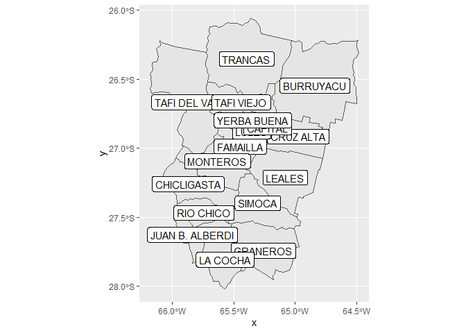

geografía Arrgentina usando R 
geoAr brinda herramientas que facilitan el acceso y el trabajo con datos espaciales de Argentina desde R.
Versión en desarrollo (Development version)
# install.packages('devtools') si no tiene instalado devtools
devtools::install_github("politicaargentina/geoAr")Ejemplo de uso (Usage)
library(geoAr)
show_arg_codes() # Preview avialable data
#> # A tibble: 26 x 5
#> id codprov codprov_censo codprov_iso name_iso
#> <chr> <chr> <chr> <chr> <chr>
#> 1 ARGENTINA " " " " AR Argentina
#> 2 CABA "01" "02" AR-C Ciudad Autónoma de Buenos Air~
#> 3 BUENOS AIRES "02" "06" AR-B Buenos Aires
#> 4 CATAMARCA "03" "10" AR-K Catamarca
#> 5 CORDOBA "04" "14" AR-X Córdoba
#> 6 CORRIENTES "05" "18" AR-W Corrientes
#> 7 CHACO "06" "22" AR-H Chaco
#> 8 CHUBUT "07" "26" AR-U Chubut
#> 9 ENTRE RIOS "08" "30" AR-E Entre Ríos
#> 10 FORMOSA "09" "34" AR-P Formosa
#> # ... with 16 more rows
(tucuman <- get_geo(geo = "TUCUMAN")) # geo id parameter
#> Simple feature collection with 17 features and 2 fields
#> Geometry type: MULTIPOLYGON
#> Dimension: XY
#> Bounding box: xmin: -66.18101 ymin: -28.01575 xmax: -64.48315 ymax: -26.06037
#> Geodetic CRS: WGS 84
#> # A tibble: 17 x 3
#> codprov_censo coddepto_censo geometry
#> * <chr> <chr> <MULTIPOLYGON [°]>
#> 1 90 007 (((-64.49919 -26.23353, -64.49857 -26.26325, -6~
#> 2 90 014 (((-65.13782 -26.74975, -65.10095 -26.75771, -6~
#> 3 90 021 (((-65.94729 -27.08444, -65.93885 -27.0989, -65~
#> 4 90 028 (((-65.62733 -26.87134, -65.62598 -26.84177, -6~
#> 5 90 035 (((-65.47532 -27.53838, -65.43503 -27.5425, -65~
#> 6 90 042 (((-65.51768 -27.54528, -65.53685 -27.62278, -6~
#> 7 90 049 (((-65.51348 -27.62978, -65.52091 -27.66553, -6~
#> 8 90 056 (((-65.12933 -27.02488, -65.12589 -27.01659, -6~
#> 9 90 063 (((-65.43583 -26.83751, -65.38124 -26.84196, -6~
#> 10 90 070 (((-65.86853 -26.99852, -65.85796 -27.01388, -6~
#> 11 90 077 (((-65.93481 -27.39544, -65.89887 -27.3702, -65~
#> 12 90 084 (((-65.16293 -26.82289, -65.18562 -26.86204, -6~
#> 13 90 091 (((-65.33499 -27.20478, -65.33462 -27.21948, -6~
#> 14 90 098 (((-66.08361 -26.23547, -66.06621 -26.23792, -6~
#> 15 90 105 (((-65.70111 -26.52317, -65.65078 -26.5263, -65~
#> 16 90 112 (((-65.52483 -26.09667, -65.4682 -26.09253, -65~
#> 17 90 119 (((-65.27025 -26.84087, -65.28587 -26.83549, -6~
(tucuman_names <- tucuman %>%
add_geo_codes()) # Augment data with metadata as districts names or alternative id codes
#> Simple feature collection with 17 features and 8 fields
#> Geometry type: MULTIPOLYGON
#> Dimension: XY
#> Bounding box: xmin: -66.18101 ymin: -28.01575 xmax: -64.48315 ymax: -26.06037
#> Geodetic CRS: WGS 84
#> # A tibble: 17 x 9
#> codprov_censo coddepto_censo codprov coddepto nomdepto_censo name_prov
#> <chr> <chr> <chr> <chr> <chr> <chr>
#> 1 90 007 23 013 BURRUYACU TUCUMAN
#> 2 90 014 23 012 CRUZ ALTA TUCUMAN
#> 3 90 021 23 005 CHICLIGASTA TUCUMAN
#> 4 90 028 23 003 FAMAILLA TUCUMAN
#> 5 90 035 23 009 GRANEROS TUCUMAN
#> 6 90 042 23 007 JUAN B. ALBERDI TUCUMAN
#> 7 90 049 23 008 LA COCHA TUCUMAN
#> 8 90 056 23 011 LEALES TUCUMAN
#> 9 90 063 23 002 LULES TUCUMAN
#> 10 90 070 23 004 MONTEROS TUCUMAN
#> 11 90 077 23 006 RIO CHICO TUCUMAN
#> 12 90 084 23 001 CAPITAL TUCUMAN
#> 13 90 091 23 010 SIMOCA TUCUMAN
#> 14 90 098 23 017 TAFI DEL VALLE TUCUMAN
#> 15 90 105 23 016 TAFI VIEJO TUCUMAN
#> 16 90 112 23 014 TRANCAS TUCUMAN
#> 17 90 119 23 015 YERBA BUENA TUCUMAN
#> # ... with 3 more variables: codprov_iso <chr>, name_iso <chr>,
#> # geometry <MULTIPOLYGON [°]>
# MAPING
ggplot2::ggplot(data = tucuman_names) +
ggplot2::geom_sf() +
ggplot2::geom_sf_label(ggplot2::aes(label = nomdepto_censo))
#> Warning in st_point_on_surface.sfc(sf::st_zm(x)): st_point_on_surface may not
#> give correct results for longitude/latitude data
# GRIDS AS IF THEY WHERE MAPS FOR {geofacet}
(grid_tucuman <- get_grid("TUCUMAN"))
#> name_provincia row col code name
#> 1 TUCUMAN 1 4 013 BURRUYACU
#> 2 TUCUMAN 2 4 001 CAPITAL
#> 3 TUCUMAN 4 2 005 CHICLIGASTA
#> 4 TUCUMAN 2 5 012 CRUZ ALTA
#> 5 TUCUMAN 3 3 003 FAMAILLA
#> 6 TUCUMAN 5 4 009 GRANEROS
#> 7 TUCUMAN 5 3 007 JUAN B. ALBERDI
#> 8 TUCUMAN 6 3 008 LA COCHA
#> 9 TUCUMAN 3 5 011 LEALES
#> 10 TUCUMAN 3 4 002 LULES
#> 11 TUCUMAN 3 2 004 MONTEROS
#> 12 TUCUMAN 4 3 006 RIO CHICO
#> 13 TUCUMAN 4 4 010 SIMOCA
#> 14 TUCUMAN 2 1 017 TAFI DEL VALLE
#> 15 TUCUMAN 2 2 016 TAFI VIEJO
#> 16 TUCUMAN 1 3 014 TRANCAS
#> 17 TUCUMAN 2 3 015 YERBA BUENA
geofacet::grid_preview(grid_tucuman, label = "name")
#> Note: You provided a user-specified grid. If this is a generally-useful
#> grid, please consider submitting it to become a part of the geofacet
#> package. You can do this easily by calling:
#> grid_submit(__grid_df_name__)